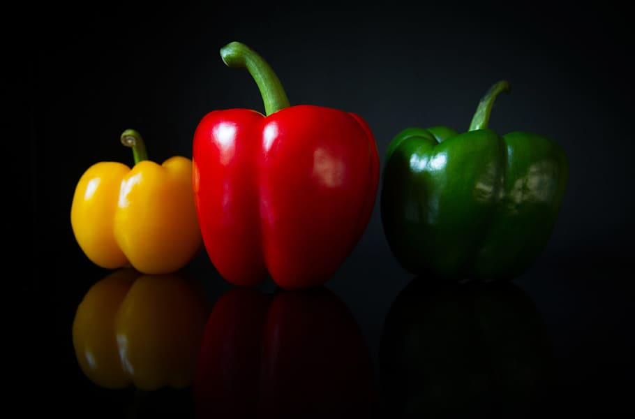

Capsicum

- Capsicum is an herbal supplement used for treatment of post-herpetic pain (shingles), circulatory problems (peripheral), clotting disorders, diarrhea, digestion problems, fibromyalgia (topical), heart disease (prevention), neuralgias (topical), neuropathies (topical), pain syndromes (topical), prurigo nodularis, migraine (intranasal).
- Capsicum is effective for pain relief.
- Capsicum is available under the following different brand names: African chilies, Ausanil, capsaicin, cayenne, chili pepper, green chili pepper, Louisiana long pepper, Mexican chilies, paprika, pimento, red pepper, and tabasco pepper.
- If your doctor has directed you to use this medication, your doctor or pharmacist may already be aware of any possible drug interactions and may be monitoring you for them.
- Do not start, stop, or change the dosage of any medicine before checking with your doctor, health care provider or pharmacist first.
- Capsicum has no known severe interactions with other drugs.
- Capsicum has no known serious interactions with other drugs.
- Good source of: Vitamin A Vitamin B1 (thiamine) Vitamin B2 (riboflavin) Vitamin B3 (niacin) Vitamin B6 Vitamin B9 (folate/folic acid) Vitamin C Vitamin E Vitamin K Manganese Potassium.
- Good source of fibre.
- The sweetness of capsicums is due to their natural sugars (green capsicums have less sugar than red capsicums).
- When choosing capsicums you should select ones with firm, glossy skins. Avoid those with shrivelled skins, soft spots or other visible damage.
- Energy – 100 g of green capsicum supplies 90 kJ (105 kJ from red capsicum).